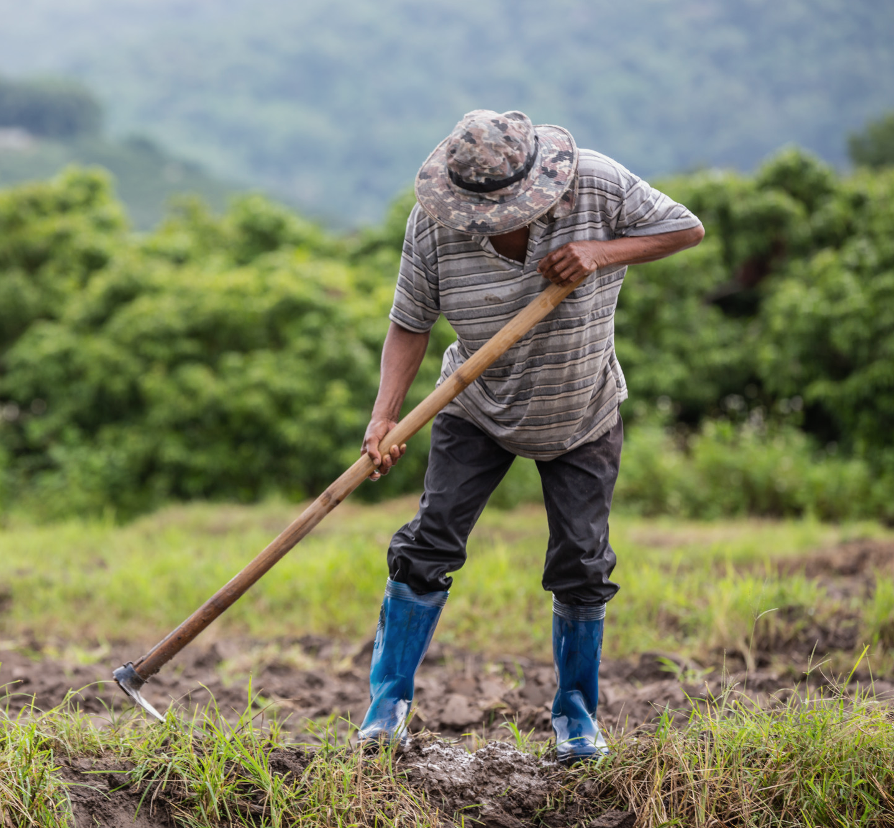

A agricultura sustentável promove práticas agrícolas que protegem o meio ambiente, preservam os recursos naturais e promovem a produção de alimentos saudáveis e de qualidade.
Agricultura orgânica: Utilizar práticas agrícolas livres de agrotóxicos e adubos químicos, priorizando o uso de fertilizantes naturais, como composto orgânico, esterco e adubação verde.
Compostagem: Reciclar resíduos orgânicos, como restos de culturas, aparas de grama e esterco animal, para produzir composto orgânico, que pode ser utilizado como adubo natural e melhorador de solo.
Agricultura de conservação: Implementar técnicas para reduzir a erosão do solo, como o plantio direto, que evita a remoção da cobertura vegetal anterior e mantém o solo protegido o ano todo.